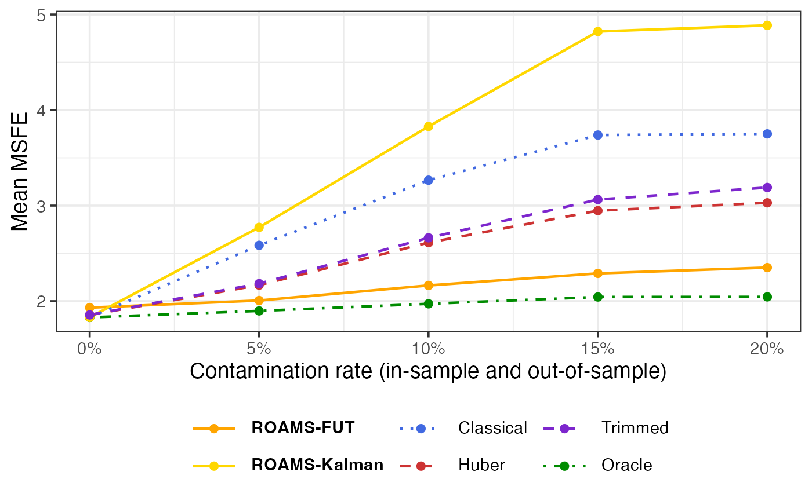
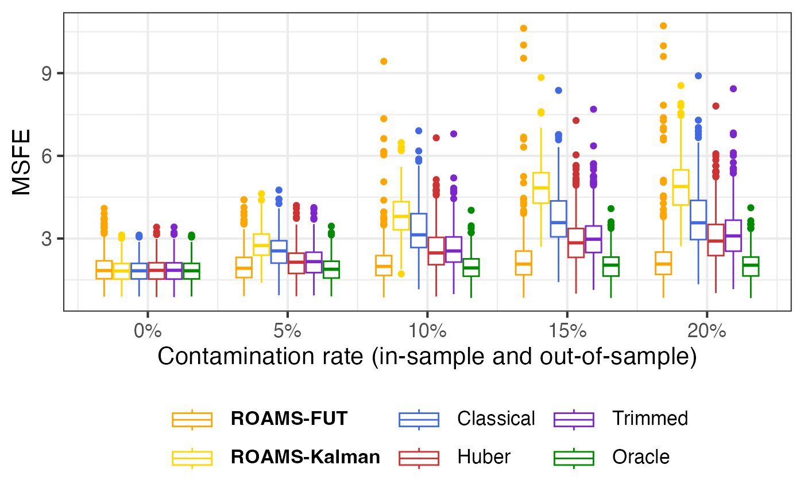

This page shows how the simulation results in Section 4.3 of Shankar et al. (2025) are generated.
library(tidyverse)
library(roams) # version 0.6.1
library(future)
## Number of cores to use
study = "study2" # Study 3 re-uses data and model fits from Study 2
seed = paste0("seed", 2025.3)
data_path = "data/"
scripts_path = "scripts/"
run_sim = FALSESimulate data for Study 3
The code below takes the out-of-sample data from Study 2 and contaminates it with outliers to form the data for Study 3. The models fitted in-sample from Study 2 are also loaded so that performance on contaminated out-of-sample data can be evaluated for Study 3.
classical_study2 = read_rds(paste0(
data_path, "classical_", study, "_", seed, ".rds"))
roams_study2 = read_rds(paste0(
data_path, "roams_", study, "_", seed, ".rds"))
oracle_study2 = read_rds(paste0(
data_path, "oracle_", study, "_", seed, ".rds"))
huber_study2 = read_rds(paste0(
data_path, "huber_", study, "_", seed, ".rds"))
trimmed_study2 = read_rds(paste0(
data_path, "trimmed_", study, "_", seed, ".rds"))
data_study2 = read_rds(paste0(
data_path, "data_", study, "_", seed, ".rds"))
model_fits_study2 = data_study2 |>
bind_cols(classical_study2) |>
bind_cols(roams_study2) |>
bind_cols(oracle_study2) |>
bind_cols(huber_study2) |>
bind_cols(trimmed_study2)
# Filter to outlier distance = 5 to create model_fits_study3
model_fits_study3 = model_fits_study2 |>
select(-model_list) |>
rename(roams_fut_model = best_BIC_model) |>
mutate(roams_kalman_model = roams_fut_model) |>
filter(distance == 5) |>
select(-y, -x, -y_clean, -outlier_locs, -distance, -x_oos)
oos_outlier_locs = tibble(
contamination_oos = c(0, 0.05, 0.1, 0.15, 0.2),
locs = list(NULL, 10, c(5,15), c(5,10,15), c(5,10,15,20))
)
# Generate random vectors for out-of-sample contamination
set.seed(as.numeric(str_remove(seed, "seed")))
samples = 300
angles = runif(samples*4, max = 2*pi)
angles = split(angles, rep(1:samples, each = 4)) |> unname()
oos_outlier_vecs = tibble(
sample = 1:samples,
vec = map(angles, function(angle) {map(angle, ~ c(cos(.), sin(.)) * 5)}) # outlier distance = 5
)
# Contaminate out-of-sample data
model_fits_study3 = model_fits_study3 |>
mutate(
y_oos_contaminated = pmap(
list(sample, contamination, y_oos),
function(sample_no, contamination, y_oos) {
locs = oos_outlier_locs |>
# Strange issue that simply filtering for contamination_oos == contamination does not work, so we use the following workaround:
filter(contamination_oos < contamination + 0.001,
contamination_oos > contamination - 0.001) |>
pull(locs) |>
pluck(1)
y_oos_contaminated = y_oos
for (timepoint in 1:20) {
if (timepoint %in% locs) {
vec = oos_outlier_vecs |>
filter(sample == sample_no) |>
pull(vec) |>
pluck(1) |>
pluck(timepoint / 5) # get appropriate random vector
y_oos_contaminated[timepoint,] = y_oos_contaminated[timepoint,] + vec
}
}
return(y_oos_contaminated)
}
)
)
model_fits_study3 = model_fits_study3 |>
mutate(contamination = as.character(contamination)) |>
left_join(oos_outlier_locs |>
rename(contamination = contamination_oos) |>
mutate(contamination = as.character(contamination)),
by = "contamination") |>
rename(true_oos_outlier_locs = locs) |>
mutate(contamination = as.numeric(contamination))Compute evaluation metrics for fitted models
Using the model fits from Study 2, one-step-ahead contaminated
out-of-sample MSFEs are computed against the clean observations
y_oos. The function to compute this metric,
get_MSFE_contaminated(), is sourced from the
scripts/evaluation_functions.R script file. This process
takes a few minutes to run, so the output is saved to the file
data/eval_metrics_study3.rds.
source(paste0(scripts_path, "evaluation_functions.R"))
eval_start = Sys.time()
eval_metrics_study3 = model_fits_study3 |>
pivot_longer(ends_with("_model"),
names_to = "method",
values_to = "model") |>
mutate(
MSFE_contaminated = pmap_dbl(list(
model,
method,
y_oos_contaminated,
y_oos,
true_oos_outlier_locs
), .f = get_MSFE_contaminated)
) |>
select(-c(model, y_oos, y_oos_contaminated)) ## reduce size of object by removing data set information
eval_end = Sys.time()
eval_end - eval_start
readr::write_rds(eval_metrics_study3,
paste0(data_path, "eval_metrics_study3.rds"))Results
We illustrate the results contained in
eval_metrics_study3.rds using plots and tables.
Load packages for plots and tables:
library(patchwork)
library(ggtext)
library(knitr)
library(kableExtra)
library(ggbeeswarm)
theme_set(
theme_bw(base_size = 14) +
theme(legend.position = "bottom",
legend.key.width = unit(1.2, "cm"))
)
LW = 0.8 # linewidths
PS = 2.0 # point sizesLoad eval_metrics_study1.rds:
Check number of replicates per contamination rate:
eval_metrics_study3 |>
filter(method == "roams_fut_model") |>
janitor::tabyl(contamination) |>
knitr::kable()| contamination | n | percent |
|---|---|---|
| 0.00 | 300 | 0.2 |
| 0.05 | 300 | 0.2 |
| 0.10 | 300 | 0.2 |
| 0.15 | 300 | 0.2 |
| 0.20 | 300 | 0.2 |
Contaminated out-of-sample MSFE
Mean-aggregated (Figure 6 of Shankar et al. (2025)) and raw box plots of the one-step-ahead contaminated out-of-sample MSFE:
methods = c("roams_fut_model", "roams_kalman_model", "classical_model", "huber_model", "trimmed_model", "oracle_model")
labels = c("**ROAMS-FUT**", "**ROAMS-Kalman**", "Classical", "Huber", "Trimmed", "Oracle")
colours = c("orange", "gold", "royalblue", "brown3", "purple3", "green4")
linetypes = c("solid", "solid", "dotted", "dashed", "dashed", "dotdash")
eval_metrics_study3 |>
group_by(contamination, method) |>
summarise(MSFE_contaminated = mean(MSFE_contaminated)) |>
mutate(method = factor(method, levels = methods)) |>
ggplot() +
aes(x = contamination, y = MSFE_contaminated,
colour = method, linetype = method) +
geom_line(linewidth = LW) +
geom_point(size = PS) +
scale_colour_manual(values = setNames(colours, methods),
labels = setNames(labels, methods)) +
scale_linetype_manual(values = setNames(linetypes, methods),
labels = setNames(labels, methods)) +
labs(x = "Contamination rate (in-sample and out-of-sample)",
y = "Mean MSFE", colour = NULL, linetype = NULL) +
scale_x_continuous(labels = scales::percent) +
theme(legend.text = element_markdown())
The cases where ROAMS-FUT doesn’t do well are when it has detected an out-of-sample timepoint as an outlier just before a true outlier. This causes the FUT filter to not be able to detect the true outlier, resulting in poor MSFE.
eval_metrics_study3 |>
mutate(method = factor(method, levels = methods)) |>
ggplot() +
aes(x = contamination, y = MSFE_contaminated,
colour = method, group = interaction(contamination, method)) +
geom_boxplot() +
scale_colour_manual(values = setNames(colours, methods),
labels = setNames(labels, methods)) +
labs(x = "Contamination rate (in-sample and out-of-sample)",
y = "MSFE", colour = NULL) +
scale_x_continuous(labels = scales::percent) +
theme(legend.text = element_markdown())